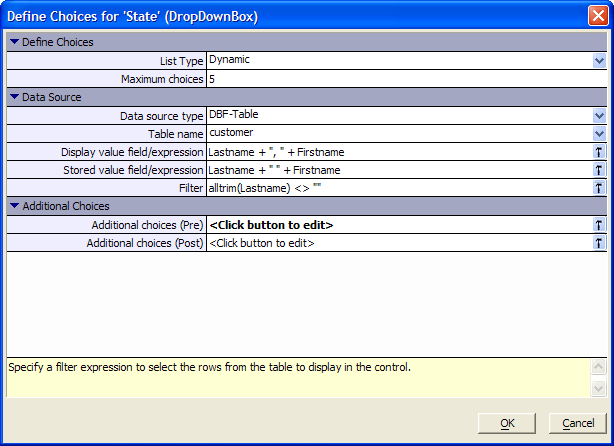

Defining Choices for Check Boxes, Radio Buttons, and Drop Down Boxes
There are three types of fields that you can place on grids and forms that can present the user with multiple selection choices. These are:
Check Boxes
Radio Buttons
Drop Down Boxes
The choices that you display can be static (fixed and unchanging) or dynamic.
Display the Fields page of the Grid Component Builder.
Pick the field in the Selected Fields list that will display choices.
Set the Display Settings > Control Type property to one of the following:
"CheckBox"
"RadioButton"
"DropDownBox"
In the resulting CheckBox Properties > Choices, RadioButton Properties > Choices, or DropDownBox Properties > Choices property click
 to display the Define Choices dialog box.
to display the Define Choices dialog box.In the List Type properties field, select either:
"Static"
"Dynamic"
If you selected "Static" in the List Type properties field.
Click
to display the Specify Choices
dialog.Enter one choice per line in the format DisplayValue [ | StoredValue ]. The StoredValue is only necessary if you want to save something different than you display.
 Note: Do not store apostrophes (') in lists.
In this case it is appropriate to have different values for DisplayValue
and StoredValue., such Husband's
| Husband.
Note: Do not store apostrophes (') in lists.
In this case it is appropriate to have different values for DisplayValue
and StoredValue., such Husband's
| Husband.
Optionally, if you are working with a dialog component, select one of the above entries in the Initial Selection field.
Click OK to return to the Define Choices dialog.
Click OK to return to the Grid Builder.
 Note : Logical values
are represented by the values "True" and "False".
For example, if you wanted to use "Yes" and "No",
you could have these entries in the list:
Note : Logical values
are represented by the values "True" and "False".
For example, if you wanted to use "Yes" and "No",
you could have these entries in the list:
Yes|True
No|False
If you selected "Dynamic" in the List Type properties field.
Enter the maximum number of choices you want to display at any time in the Maximum choices property. Leave the default value of "0" if you do not wish to restrict the choice list.
Select the database type from the Data source type property list. The options are:
If you selected "DBF-Table".
Select the data source in the Table name property field.
Click
in the Display value field/expression property field to display the Expression Builder. Define the value that will be returned by each record in the data source.Optionally, click
in the Stored value field/expression property field to display the Expression Builder. Define the value that will be saved for each selection. If you do not define a field or expression here, the displayed value will be stored.Optionally, click
in the Filter field to select
which records will be returned from the data source. The expression must
evaluate to a logical value for each record.Continue with ((|#Additional_Choices|Additional_Choices)).
If you selected "ADO/ODBC" for database type.
Choose how you will connect to the database in the Connection Type property field. The choices are:
"Access Database"
"ADO Connection String"
If you selected "Access Database" for connection type.
Click
in the Access filename property
field to display the Select Database dialog.
Navigate to and select the Access database you want to use and click Open.Click
in the SQL SELECT statement property
field to display the SQL SELECT dialog box.In the Table field select the table or view that will be providing the choices.
In the Field to Display field select the field to return to the choice list.
Optionally, check Store value other than the display value and select a field from the Field to store list.
Optionally, check Filter data and compose a filter expression that evaluates to a logical value in the Define Filter fields.
Click OK to return to the Define Choices dialog.
Continue with ((|#Additional_Choices|Additional_Choices))
If you selected "ADO Connection String" for connection type.
Optionally, check the Use saved Connection string property and select the connection string from the Connection string name list.
Optionally, click
in the ADO Connection string
property field to display the Data Link Properties
dialog. Define the connection string and click OK.Click
in the SQL SELECT statement property
field to display the SQL SELECT dialog box.In the Table field select the table or view that will be providing the choices.
In the Field to Display field select the field to return to the choice list.
Optionally, check Store value other than the display value and select a field from the Field to store list.
Optionally, check Filter data and compose a filter expression that evaluates to a logical value in the Define Filter fields.
Click OK to return to the Define Choices dialog.
Continue with ((|#Additional_Choices|Additional_Choices))
Optionally, check Data Source > Use saved connection string property field.
If you are going to use a saved connection string, select one from the Data Source > AlphaDAO Connection string name property field.
If you are not going to use a saved connection string, click
in the Data Source > AlphaDAO Connection
string property field to display the
Create SQL Connection String dialog box.Click
in the Data Source > AlphaDAO SQL SELECT
Statement property field to display the SQL
SELECT dialog box.In the Table field select the table or view that will be providing the choices.
In the Field to Display field select the field to return to the choice list.
Optionally, check Store value other than the display value and select a field from the Field to store list.
Optionally, check Filter data and compose a filter expression that evaluates to a logical value in the Define Filter fields.
Click OK to return to the Define Choices dialog.
Continue with ((|#Additional_Choices|Additional_Choices)).
Optionally, if you selected "Dynamic" in the List Type properties field, click
in the Additional
choices (Pre) property field to display the Specify
Choices dialog. These choices appear before the dynamic list of
choices.Enter one choice per line in the format DisplayValue [ | StoredValue ]. The StoredValue is only necessary if you want to save something different than you display.
Click OK to return to the Define Choices dialog.
Optionally, if you selected "Dynamic" in the List Type properties field, click
in the Additional
choices (Post) property field to display the Specify
Choices dialog. These choices after before the dynamic list of
choices.Enter one choice per line in the format DisplayValue [ | StoredValue ]. The StoredValue is only necessary if you want to save something different than you display.
Click OK to return to the Define Choices dialog.
Click OK to return to the Grid Builder.
If you selected "Variable" for database type:
Enter the variable's name in the Variable Name property field.
If a selection list is displayed more than once on a grid, populating it from a variable can improve grid component performance. Assume that a drop down box is populated dynamically by doing a query against an Alpha Five table or ADO source. Rather than defining the choices for each of these drop down boxes in the grid as a query against a table, you could specify that the drop down box choices come from a variable. You would then define the value of this variable in the override settings of the page.
For example, assume that you need to display a list of companies more than once on a grid named test :
|
Delete Tmpl ... ... |
The only restriction is that the variable must be a session variable. In the drop down boxes on the grid, you would say that the variable name is session.varCompany.
Other Properties
If you selected "DropDownBox" for control type.
Enter the number of rows you wish to display in the Height property field. The default value of 1 will produce a drop down list box. Other values will produce a scrolling list box.
Select how to treat user entries that are not in the list in the Not in list rule property field. The options are:
"Add to list"
"Do nothing"

|
Category |
Options and Description |
|
List Type |
Select whether the choices will be fixed or changing. The options are:
tmpl.field_infoN .Checkbox.Type as C .DropdownBox.Type as C .RadioButton.Type as C |
|
Choices |
If you selected "Static" in List
Type, click |
|
Maximum choices |
If you selected "Dynamic" in List Type, enter the maximum number of choices to display. Set 0 to return all values. tmpl.field_infoN .Checkbox.maxchoices as C (default = "10") .DropdownBox.maxchoices as C .RadioButton.maxchoices as C |
If you selected "Dynamic" in List Type, the Data Source section will appear.
|
Category |
Options and Description |
|
Data source type |
Select where to get the choices. The options are:
tmpl.field_infoN .Checkbox.Datasource as C .DropdownBox.Datasource as C .RadioButton.Datasource as C |
|
Table name |
If you selected "DBF-Table" in Data source type, select a table from the drop-down list. tmpl.field_infoN .Checkbox.Table as C .DropdownBox.Table as C .RadioButton.Table as C |
|
Display value field/ex |
If you selected "DBF-Table" in Data
source type, enter an expression that defines the values to display.
Click
tmpl.field_infoN .Checkbox.DisplayValueField as C .DropdownBox.DisplayValueField as C .RadioButton.DisplayValueField as C |
|
Stored value field/ex |
If you selected "DBF-Table" in Data
source type, optionally, enter an expression that defines the values
to store. Click
tmpl.field_infoN .Checkbox.StoredValueField as C .DropdownBox.StoredValueField as C .RadioButton.StoredValueField as C |
|
Filter |
If you selected "DBF-Table" in Data source type, optionally, enter an expression that selects records from the table to display. If this expression is blank. All records will be displayed. The expression must evaluate to a logical value.
tmpl.field_infoN .Checkbox.Filter as C .DropdownBox.Filter as C .RadioButton.Filter as C |
|
Connection type |
If you selected "ADO/ODBC" in Data source type, select a connection type from the drop-down list. The options are:
|
|
Access filename |
If you selected "ADO/ODBC" in Data
source type, and "Access Database" in Connection
type, click |
|
Use saved connection string |
If you selected "ADO/ODBC" in Data source type, and "ADO Connection String" in Connection type, optionally check this box to select an existing connection string. tmpl.ADO.ConnectionString as C |
|
Connection string name |
If you enabled Use saved connection string, navigate to and select an existing connection string. |
|
SQL SELECT statement |
If you selected "ADO/ODBC" in Data
source type, and "Access Database" in Connection
type, click
tmpl.ADO.SQL as C |
|
Variable name |
If you selected "Variable" in Data source type, select a variable from the drop-down list. Typically, you will have defined this variable as a session variable in another page, or in the Form's Initialization event. |
|
Additional choices (Pre) |
If you selected "Dynamic" in List Type, you can add additional static choices that will appear at the top of the list.
tmpl.field_infoN .Checkbox.AdditionalChoicesPre as C .DropdownBox.AdditionalChoicesPre as C .RadioButton.AdditionalChoicesPre as C |
|
Additional choices (Post) |
If you selected "Dynamic" in List Type, you can add additional static choices that will appear at the bottom of the list. tmpl.field_infoN .Checkbox.AdditionalChoicesPost as C .DropdownBox.AdditionalChoicesPost as C .RadioButton.AdditionalChoicesPost as C |
Enter a list of choices, one per line. To specify a stored value that is different from the displayed value, enter the choices in the format DisplayValue | StoredValue.
Optionally, click Sort Ascending or Sort Descending to reorder the list.
Optionally, provide a default value in the Initial selection field.
Click OK to save your inputs or Cancel to quit.
See Also
Setting Grid Control Properties
Limitations
Web publishing applications only.